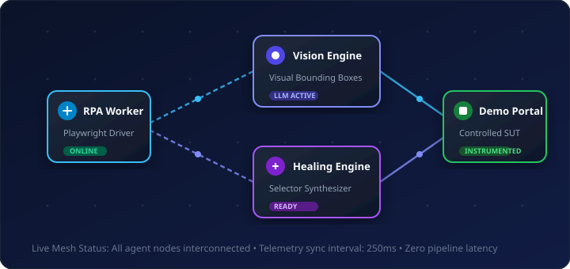

Active RPA Tasks
1,482
+12.4%
42 browser sessions navigating target endpoints concurrently.
Controlled System Under Test (SUT) for OmniSight Multimodal Agent. Monitor metrics, test selector resilience, and evaluate autonomous repairs.
42 browser sessions navigating target endpoints concurrently.
Zero human intervention required across 214 selector drift events.
Mean multimodal model visual inspection to code patch synthesis.
Reduced by automatic locator fallback and visual anchors.

| Workflow ID | Target SUT Page | Target Selector | Execution Status | Self-Healing Trigger | Actions |
|---|---|---|---|---|---|
WF-8491 |
/checkout/payment |
#submit-order-button |
Passing | Resilient (DOM Match) | |
WF-8492 |
/portal/dashboard |
#btn-trigger-self-heal |
Passing | Standard Locator | |
WF-8493 |
/inventory/grid |
.item-row:nth-child(2) |
Selector Drift | Patched via Vision | |
WF-8494 |
/admin/topology |
#service-topology-image |
Passing | Visual OK |